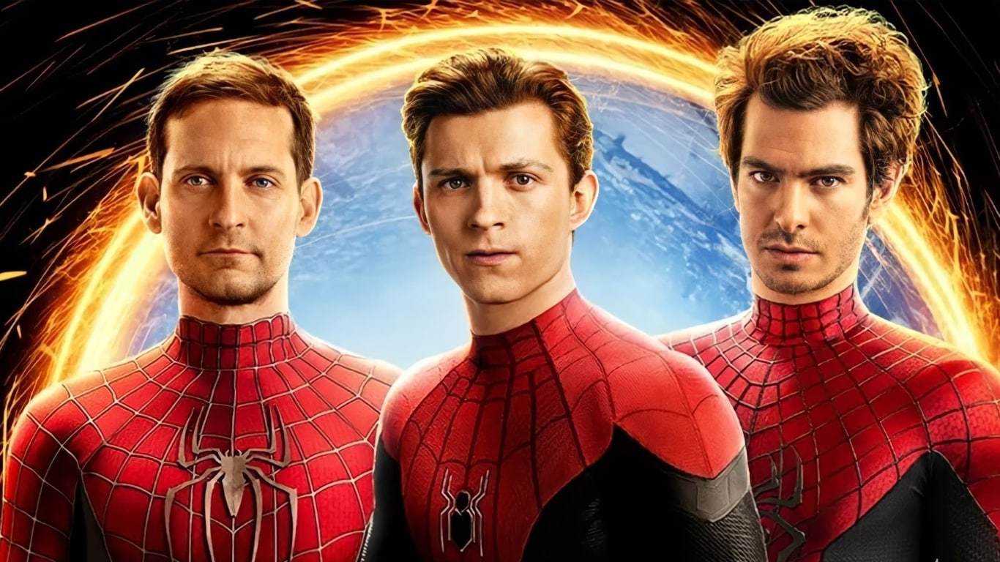
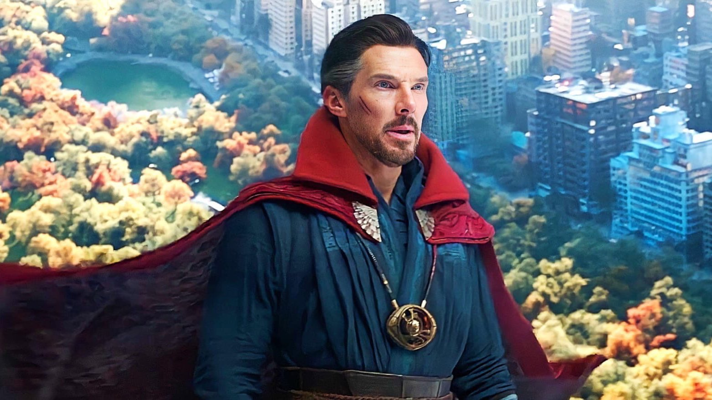

Depois de ter sua identidade revelada ao mundo, Peter Parker pede ajuda ao Doutor Estranho para que todos esqueçam que ele é o Homem-Aranha. No entanto, o feitiço sai errado e vilões de outras realidades aparecem, colocando o multiverso em perigo e testando os limites do herói.

O jovem herói que tenta equilibrar sua vida pessoal com a responsabilidade de ser o Homem-Aranha.
Namorada de Peter e uma das poucas pessoas que conhecem seu segredo.

O mago supremo que tenta ajudar Peter com um feitiço arriscado que afeta o multiverso.